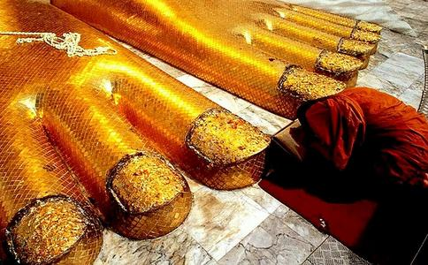

我有几个朋友，平时很热心帮助人，出钱出力，不遗余力。但是，凡是他帮助过的人，不久都会成为怨敌，对方得了好处，不但不
佛理云：种瓜得瓜，种豆得豆。
今世多受人怨恨，前世必然多怨恨他人，今世热心帮助他人，是种下未来的福果，是极好的善因。但不要以为自己做了善事，帮助了对方，就想在对方的身上得到好的报答，有这样的想法，本身就已经错误。先哲有云；“施恩勿望报。”现在帮助了他人，种下了善因，就不要去想何时会得到福果，有朝一日，福报自然会到来。
今世多受人怨恨，前世必然种下了“多怨恨他人”的恶因，亦必然曾得到同等的恶报，等到这个恶报完结了﹝也即是这项债务还清了﹞，所种下的善因自然就会结出福果来。
“好心没好报”亦会有另外的一种情形出现。
我有一位姓蓝的同门，他以前是开三间“肉食铺”生意，辛辛苦苦经营，赚了点钱，后来
但是，他“一心向善”之后不久，同他合作做生意的朋友却吞没了他的资金逃走了。
这位同门可气坏了，差点发神经，他想不通，我一心向善，为什么好心没好报？
他到处逢人便说；“这个世界好心没好报，我用辛辛苦苦赚来的血汗钱帮助朋友，反而给朋友骗光了！”
他发了狠，时时向
这件事传到我的耳里，最初我不以为意，只是觉得这位蓝同门太想不开，也太狠心。但是在当晚我
佛菩萨多么慈悲啊！钱给骗走了，这位同门应该忏悔自己，感谢佛菩萨都唯恐来不及，怎么可以发狠求菩萨惩罚人家呢？这岂不是更加重了自己的罪恶吗？
佛菩萨救人的慈悲和苦心，又有谁去深入领悟理解呢？
类似“好心没好报”的事，笔者本身有几年经历。
笔者因为虔诚学佛，平时除了在家中的早晚功课外，亦常常到佛堂去做功课，尤其是佛堂有法会之时，我一定至诚参加，而且尽量争取机会入坛持诵经咒。
但是，我每次参加了法会之后，必然大病一场，或是患一场非常疼痛的病，甚至于大流血几天，这种现象保持了六七年之久，历验不爽。于是，我成了有“经验”的人，每次法会之后，一定预先作好疼痛的准备，时间亦相当的准确──法会之后不出三天，必见病痛。
同门佛友及一般的朋友都说我“好心得不到好报”，他们的理由是：我发愿出心至善，一心虔诚，理应消除不少疾病才对。没理由会反而增加疾病
亦有的人说明知参加了法会之后会大病一场，仍然要持续去参加，是“自讨苦吃”。
更有的人在暗中说菩萨在征罚我。
对于诸如此类种种
其实种种说法都不对，不是好心没好报，亦不是菩萨不灵，更不是菩萨惩罚我。
到底是什么呢？只有我心理明白，我是得到佛菩萨的极大慈悲加护！
因为我在少年时期无知，用汽枪射杀鸟雀，造下了无边罪孽。
按照
我的苦心终于得到佛菩萨的慈悲救护，多年来已有好几次临危获救，大难不死。而且事后都很明显地得到佛菩萨的启示──是为我“延寿消灾”。我万分感谢佛菩萨的大恩，亦慢慢学会了用心去体会佛菩萨慈悲救世的种种用意和一片苦心。正是：“人有善念，天必佑之。”
而我的“
近年来的情况已经不同了，每次参加法会之后，不但不见病痛，相反却精神奕奕，身轻脚快，这又是佛菩萨的慈悲加持啊！